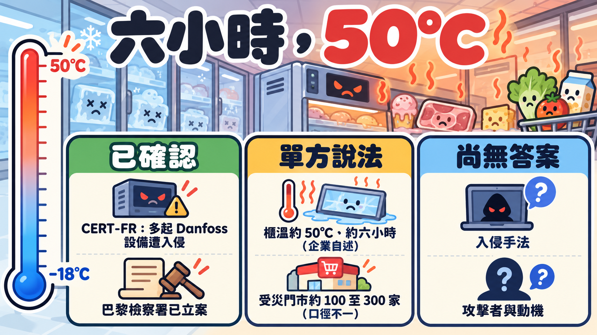

事件仍在發展，數字與說法以 2026 年 10 月 13 日前的報導為準。

週一早上，一家 Intermarché 門市的店長要做的事，和賣東西完全無關：把整排冷藏櫃清空，請執達員（huissier，法院執行官）到場開立筆錄，然後把裡面所有的生鮮和冷凍食品丟掉。Les Mousquetaires（Intermarché 的母集團）給受災門市的處理程序就是這三步（franceinfo）。
起因是前一晚。據集團對 Agence Radio France 的說法，丹麥廠商 Danfoss 供應的冷藏設備管理系統，在週日到週一的夜裡遭到攻擊，冷凍櫃與冷藏櫃的設定溫度被改成 50°C。冷凍櫃平常該待在零下十八度上下，這中間差了將近七十度。
同一個週一，三個彼此競爭的零售集團，被同一家設備商的同一類系統拖下水。
flowchart TD
A["遠端管理介面<br/>可從網際網路連到"] -.-> B["入侵手法<br/>尚未證實"]
B -.-> C["Danfoss 冷藏控制器"]
C --> D["強制持續除霜<br/>櫃溫升到約 50°C"]
D --> E["整櫃食品報廢<br/>執達員開立筆錄"]
D --> F["部分地點起火<br/>檢察署說法"]虛線是目前沒有官方確認的環節。50°C 與約六小時的說法來自 Les Mousquetaires 與 Reuters 轉述。
先把數字釘住：沒有人給得出同一個數字
受災規模是這起事件最混亂的部分。把各方說法並排看，會發現它們量的是不同的東西。
| 連鎖 | 說法 | 誰說的 | 性質 |
|---|---|---|---|
| Intermarché／Netto | 至少 300 家 | Intermarché 向 AFP | 企業自述 |
| Intermarché | 約 150 家門市冷櫃被加熱到 50°C，持續約六小時 | 集團發言人（Reuters 轉述） | 企業自述 |
| Intermarché | 約 100 家須丟棄庫存 | Les Mousquetaires 初步統計（AA） | 企業自述，較早期 |
| Intermarché | 200 至 300 家 | France Inter 消息來源 | 匿名消息 |
| Système U | 不到 100 家 | franceinfo | 媒體報導 |
| Carrefour | 80 家（全法約 6,000 家） | Le Parisien／Reuters | 企業說法 |
| Monoprix | 約 5%，約 30 家 | franceinfo／AFP | 媒體報導 |
| E.Leclerc | 「數家」，未給數字 | 向 AFP 確認供應商受影響 | 企業自述 |
數字從一百到三百不等，另有法媒估整體在 250 至 350 家之間（BleepingComputer 轉述）。有的算「冷櫃被加熱」，有的算「必須丟貨」，有的算「系統受影響」，清點的時間點也不同。讀這類報導，先問那個數字量的是哪一件事。
損失同樣只有零散的估計。阿爾薩斯 Haguenau 的兩家門市（一家 Intermarché、一家 Leclerc）估計合計約 27 萬歐元（地方報導，Lycos 彙整）。吉倫特省一家 Intermarché 的店主向 Le Monde 估計，自己報廢的存貨進貨成本約 2.1 萬歐元，並說冷藏室達到 50°C、除霜程序被拉長到八小時。Intermarché 的 Thierry Cotillard 估計全國一天的損失可達數千萬歐元，France Inter 的消息來源則說「數百萬歐元」。這些都是個別估算，沒有業界或官方的合計。
被拿來用的，是冰箱本來就有的功能
BFMTV 的報導說，攻擊者遠端觸發了「強制除霜」。除霜是冷藏設備的例行功能：蒸發器表面會結霜，系統定期短暫加熱把霜融掉。這是單一媒體的說法，Danfoss 與官方都還沒公布操作細節。
如果這個說法成立，問題的樣子就很不一樣。攻擊者不需要寫出什麼破壞性程式，只要讓一個合法、設計給維修用的動作停不下來。
報導裡沒有任何一方談到：控制器之外，有沒有獨立於軟體的過溫保護？這是本文的提問，不是已知事實。
另一個後果在檢察署的聲明裡：巴黎檢察署表示調查目的包括釐清攻擊與食物損失和「火災」之間的關聯。火災的規模、地點，目前沒有公開細節。
三家對手共用一個設備商
Intermarché、Système U、Leclerc 在同一晚出現同樣症狀，共同點是冷藏設備的供應商。各家自己的防火牆和員工訓練再扎實，也管不到設備商那一端的系統。Les Mousquetaires 表示，這種規模的冷藏系統攻擊他們從未遇過（AA）。
修補程式早就有了，為什麼還是中招
2025 年就公開的事。 Danfoss 在 2025 年 3 月發布公告 DSA-2025-03-01，說明 AK-SM 8xxA 系列有認證繞過漏洞（CVE-2025-41450），修補版本是 4.2。美國 CISA 在 2025 年 5 月 20 日發布 ICSA-25-140-03，8 月 26 日更新，8 月的更新另加入命令注入（CVE-2025-41451，可在已通過驗證的情況下遠端執行程式碼）和網頁介面設定處理不當（CVE-2025-41452，可能造成服務中斷），修補版本是 4.3.1。CISA 當時寫明「沒有已知的公開利用」，並建議這類設備不要從網際網路直接連到，要放在防火牆後，必要的遠端存取用 VPN。資安公司 Claroty 的 Team82 是通報者，後來公開研究細節，並引用 Censys 掃描結果，指出有 2,765 台 AK-SM 800A 的管理介面暴露在網路上。
這次事件裡，官方與廠商怎麼說。 法國 CERT-FR 在 10 月 12 日發出警報 CERTFR-2026-ALE-012，原文寫「已知悉多起 Danfoss AK-SM 與 AK-SC 系列設備遭入侵」，並指出把管理介面暴露在網際網路上違反最佳實務。警報沒有公布入侵手法、CVE 編號或入侵指標，也沒有說暴露就是入侵的原因。Danfoss 對 AFP 說，受影響設備多半是已停止獲得軟體和安全更新的舊產品；對冷凍業媒體 Cooling Post 則進一步說，AK-SM800 在 2021 年宣布終止生命週期，AK-SC355 在 2016 年已淘汰，另外「目前仍在售的 AK-SM800A 系統」受影響的，跑的是過時韌體。Danfoss 並說早已建議客戶把受支援的系統更新到最新韌體、把舊系統遷移到新一代方案。
能不能接到 2025 年那批 CVE，官方沒有說。 這裡的關鍵是 AK-SM800A：它正是 CISA 與 Claroty 談的 AK-SM 8xxA／800A 這個系列，而 4.2 與 4.3.1 的修補版本早在 2025 年就有了。所以最直接的推論是「有修補版本，但現場沒更新」。這仍是推論：CERT-FR 沒有指認 CVE，法國總理身邊的匿名人士只說，ANSSI（法國國家資訊系統安全局）已發現「一家丹麥公司提供的軟體中有漏洞」並聯絡了廠商。
另一個旁證是曝險數字。Predicta Lab 執行長 Baptiste Robert 說，他找到 2,752 台暴露在網際網路上的 Danfoss 系統，其中 1,590 台在法國（BleepingComputer 轉述，單一研究者的說法）。這和 Claroty 引用的 2,765 台量級相近，但兩組數字的掃描方法和時間不同，不能直接比較。
把這幾件事擺在一起，可以確定的有三點：廠商說受害的是停止更新的舊品，或沒有更新韌體的現行機型；CERT-FR 確認多起設備遭入侵；「管理介面連得到網際網路」這件事，至少從 2025 年起就被 CISA 公開警告過。
還沒有答案的事
| 問題 | 目前狀況 |
|---|---|
| 攻擊者怎麼進去的 | CERT-FR 與檢察署都沒有公布。可能與 2025 年那批漏洞有關，也可能無關 |
| 是誰幹的 | 沒有團體宣稱，沒有任何政府歸因 |
| 動機 | 沒有勒索要求被報導；動機未知 |
| 火災 | 巴黎檢察署提到「火災」，無規模與地點；火災是否由攻擊造成尚待調查 |
| 是否擴及其他國家 | Sekoia 分析師 Felix Aime 說西班牙、葡萄牙、波蘭、德國、比利時也受影響，屬單一分析師說法，無政府確認。法國政府只說正與歐洲夥伴協調 |
| 與 Ahold Delhaize 的關聯 | 同一天，荷蘭零售集團 Ahold Delhaize 宣布網路出現資安事件並讓部分系統離線；公司說沒有理由把兩件事連在一起。有勒索組織宣稱是自己幹的，屬團體自稱，未證實 |
| 與美國軍方商店的關聯 | 2026 年 8 月底，美國至少六間 commissary 的冷凍設備同時故障，Fort Huachuca 官方說「所有冷凍食品都壞了」。官方沒有說明原因，與本次事件是否有關完全未知 |
最後一列最值得注意。如果軍方商店的事件之後被證實是惡意操作，那麼「法國」就只是一系列事件中最大聲的一次；如果是巧合，我們也得到了一個提醒：現在還沒有人有辦法在事發當下分辨兩者。
如果你管的是冷鏈，這張清單今天就能用
下面不是事件報導裡的結論，是本文根據攻防兩面的常見做法整理的建議，供自查。
先看自己露不露在外面。 把自己對外公開的 IP 位址範圍丟進 Shodan、Censys 查一遍，看冷藏、空調、能源管理這類設備的管理頁面有沒有被索引到。Claroty 引用的 Censys 數字，就是這類公開掃描的結果。
拿掉直接暴露。 CISA 在 2025 年對這個產品系列就建議：不要讓設備可以從網際網路連到，放在防火牆後與企業網路隔離，需要遠端維護時走 VPN 並保持更新。CERT-FR 這次的警報也要求斷開或過濾 AK-SM、AK-SC 的存取，必須遠端管理時暫時限制在可信任的 IP。設備商和維護廠商的遠端通道也要納入，確認誰能連、從哪裡連、有沒有雙因素。
懷疑已經被入侵，照 CERT-FR 的順序。 警報列出的步驟是：存取限制為僅授權的服務商、原廠重置、套用所有可用的安全修補、輪換所有密鑰與機密資訊、檢查現有帳號、全面重新設定設備。
盤點「已經不再更新」的設備。 冷鏈設備以十年計算壽命，軟體支援週期通常短得多（這是本文的一般性類推，不是來自報導）。Danfoss 說已建議汰換舊產品；汰換的預算多半落在零售商身上（本文類推）。資產清冊上要有「廠商停止更新的日期」這一欄，才有辦法在預算會議上談。
偵測要獨立於控制器之外。 如果櫃溫感測與告警完全依賴被攻擊的同一套系統，攻擊者改了設定，告警也跟著失靈。獨立的溫度記錄器、獨立的簡訊告警、控制器上的除霜時間異常告警，都比事後才發現便宜。控制器上方有沒有一個不受軟體影響的硬體過溫保護，也值得現場去看一眼。
演練「控制器被接管」的現場作法。 這次受災門市用人工清空、請執達員驗證、銷毀食品，過程有條有理，但那是在事發後。事前該決定的是：誰有權判斷哪些食品還能救、什麼時候切到手動、保險理賠需要什麼憑證（執達員筆錄的用途，本文推測與理賠舉證有關，報導沒有明講）。
合約裡寫清楚停止更新時要通知。 設備商停更前多久要通知、停更後的安全責任歸誰、遠端存取的稽核記錄誰保管，這些是採購合約的條款，不是事件發生後才能補的功課。
帶走的事
目前能確定的很少：CERT-FR 確認多起 Danfoss 設備遭入侵，廠商說受害的是停止更新的舊品或沒更新韌體的機型，受災企業說櫃溫被調到約 50°C，檢察署已立案。入侵手法、攻擊者、動機都還沒有答案，也沒有哪個零時差漏洞或特殊惡意程式被報導。
歐盟農業專員 Christophe Hansen 在 X 上譴責這起攻擊，說食物被工具化已成現實。
你的冷藏櫃現在是誰在遠端管理，從哪裡連進來，那台設備的廠商還在不在更新它？
來源
主要來源
- Lycos，Cyberattaque : des frigos d'Intermarché, U et Leclerc visés，2026-10-12 發布、10-13 更新；彙整 33 則報導的新聞聚合頁，非單一署名報導。
- Anadolu Ajansı，France : une cyberattaque d'ampleur perturbe les systèmes frigorifiques de plusieurs enseignes de grande distribution，2026-10-12，署名 Ben Amed Azize Zougmore。
事件報導
- CERT-FR（ANSSI 體系），CERTFR-2026-ALE-012 Incident de sécurité ciblant les Danfoss série AK-SM et AK-SC，2026-10-12（官方警報）。
- Cooling Post，Danfoss moves to mitigate cyberattack，2026-10-12（含 Danfoss 聲明）。
- AFP，French supermarkets suffer refrigerator shutdown after unprecedented cyberattack，2026-10-12。
- Le Monde，Journée noire dans les supermarchés français après une cyberattaque massive，2026-10-12。
- franceinfo，Des magasins Système U, Intermarché, E.Leclerc et Monoprix touchés par une cyberattaque contre leurs installations frigorifiques，2026-10-12。
- CBS News（AFP／Reuters 轉述），Hackers turn up the heat in refrigerators at hundreds of supermarkets in France, sparking fires and food losses，2026-10-12。
- ABC News（Reuters 轉述），Hundreds of French supermarkets' fridges hacked in large-scale attack，2026-10-13。
- BleepingComputer，Cyberattack shuts down refrigerators at French supermarkets，2026-10-12。
- Help Net Security，Cyberattacks hit European grocers，2026-10-12。
- The Stack，French supermarkets hacked: Danfoss vulnerabilities blamed，2026-10。
- Ahold Delhaize，Ahold Delhaize takes precautionary measures following cybersecurity incident，2026-10-12（公司聲明）。
漏洞與背景（官方與研究機構）
- CISA，ICSA-25-140-03 Danfoss AK-SM 8xxA Series，2025-05-20 發布，2025-08-26 更新。
- Danfoss，DSA-2025-03-01 Improper Authentication vulnerability in Danfoss AK-SM8xxA Series，2025-03-24 發布，2025-09-01 更新。
- Claroty Team82，Freeze the Controller, Defrost the Food。
- Stars and Stripes，Refrigeration outages at multiple US commissaries，2026-08-28。